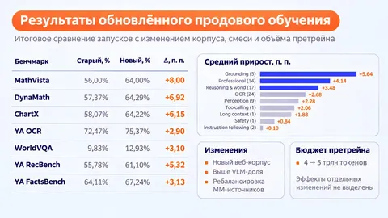

Веб-документы — богатый источник знаний для VLM. В них текст, изображения и подписи сохраняют структуру исходной страницы, поэтому модель учится связывать объяснения с иллюстрациями, понимать схемы и графики.
Но интернет — ещё и очень зашумлённый источник. Вместе с полезной информацией встречаются реклама, повторы и служебный текст. А если речь о миллиардах страниц, вручную отделить полезные данные от мусора невозможно.
Эдуард Альтшулер из подгруппы претрейна VLM в Яндексе рассказал на Data Fest 2026, как он с командой улучшали данные для претрейна. Пересказываем главное.
CatBoost
Начали с оценки связанности текста и изображений. Документ разбивали на абзацы после очистки Markdown. С помощью модели с текстовым и визуальным энкодерами получали векторы абзацев и картинок и считали их сходство.
Так получалась матрица, в которой каждый абзац сравнивали с каждым изображением. Дополнительно проверяли совпадения и порядок пар на странице.
На части документов большая VLM оценивала качество, а CatBoost обучали предсказывать эту оценку по рассчитанным признакам. Получили быстрый фильтр для большого корпуса.
Результаты проверяли в эксперименте, меняя только веб-корпус. Получили +9 п. п. на распознавании и +5 п. п. на OCR.
Но связанность текста и изображений не гарантирует, что документ содержательный, а один общий скор не даёт выбирать документы под конкретный навык. Например, для улучшения OCR пришлось бы пересобирать признаки и заново прогонять CatBoost.
Мультимодальный судья
Решили перейти от признаков связанности к оценке содержания всего документа. Для этого выделили 14 аспектов: девять описывают темы, ещё пять — общие свойства документа, включая рассуждения и прирост информации от изображения.
Большая VLM может выставлять такие оценки, но для миллиардов документов её инференс слишком дорогой. Поэтому разметили выборку большой моделью, а затем перенесли её умения в компактную Qwen3.5-0.8B с регрессионной головой.
На вход судья получает текст и изображения, на выходе сразу 14 чисел. Если меняется задача отбора, можно изменить сочетание аспектов и пороги, используя посчитанные оценки.
При обучении столкнулись с тем, что у 90% документов по некоторым темам оценки ниже 2/10. Модель могла часто выдавать низкий балл и получать небольшой лосс. Но нам важно находить редкие содержательные документы.
Поэтому усилили вклад высоких оценок в лосс. В результате MSE снизился с 0,53 до 0,42 (~21%). А компактный судья оказался примерно в 70 раз быстрее большой модели. Новый отбор дал приросты на бенчмарках по геометрии, математике и другим доменам.
Вопросы и ответы
Даже в шумных документах могут быть полезные факты, но при обучении на всём документе модель усваивает и полезную информацию, и шум.
Поэтому решили извлекать содержательную часть и превращать её в пары «вопрос-ответ» (VQA). Генератор получает документ с текстом и изображениями, находит полезную информацию и формулирует вопрос, ответ на который должен содержаться в исходном документе.
Чтобы модель не добавляла факты из собственных знаний, в 30% обучающей выборки взяли негативные примеры, для которых правильный результат — пустой список.
Пользу VQA тоже проверили в эксперименте. Замена веб-документов на сгенерированные пары дала +6 п. п. на MathVista и +2,35 п. п. на геометрии.
В результате из 4,1 млрд веб-документов с помощью мультимодального судьи отобрали 44 млн страниц, а генератор создал ещё 178 млн VQA-примеров.
Эти данные использовали в большом обучении, где выросли показатели почти по всем навыкам. Правда, одновременно команда увеличила бюджет претрейна с 4 до 5 трлн токенов и изменила доли источников, поэтому весь прирост нельзя приписывать только новым данным.
Главный вывод — отбор данных важно настраивать под нужные навыки. А даже зашумлённые документы необязательно выбрасывать, ведь из них можно извлекать полезные факты и превращать в качественные обучающие примеры.
ML Underhood
